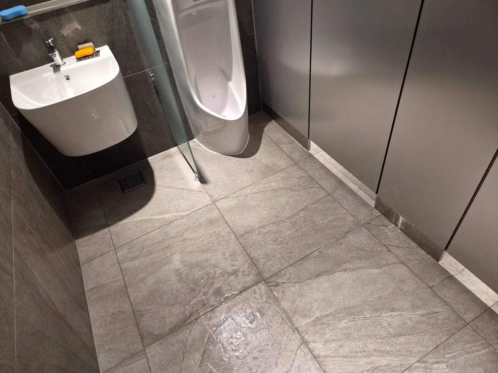
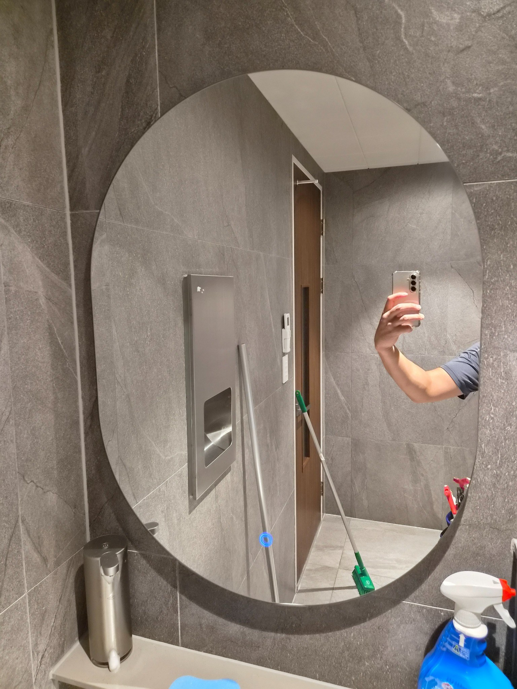
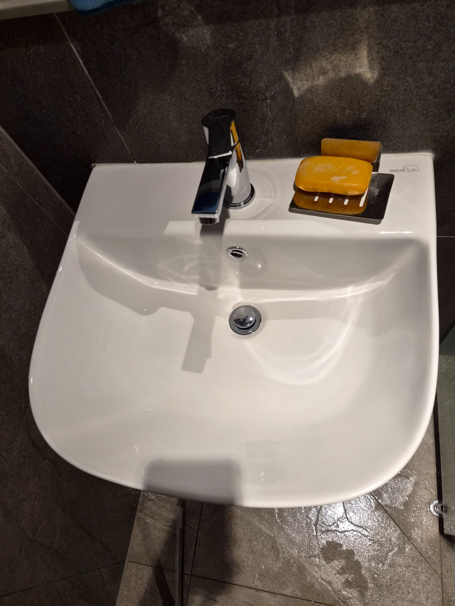
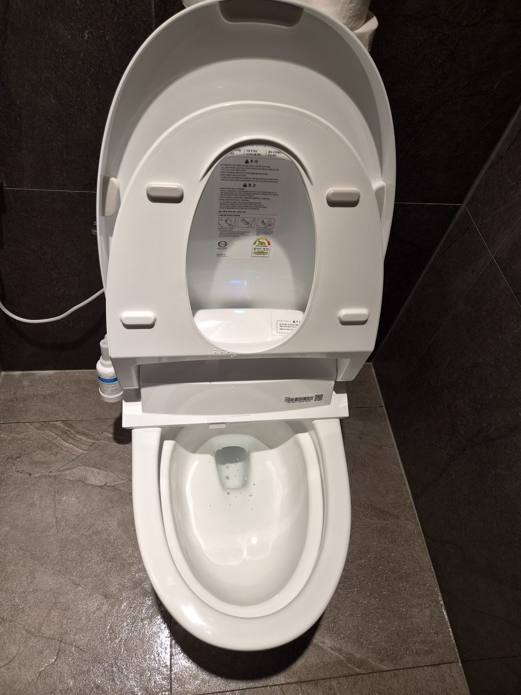
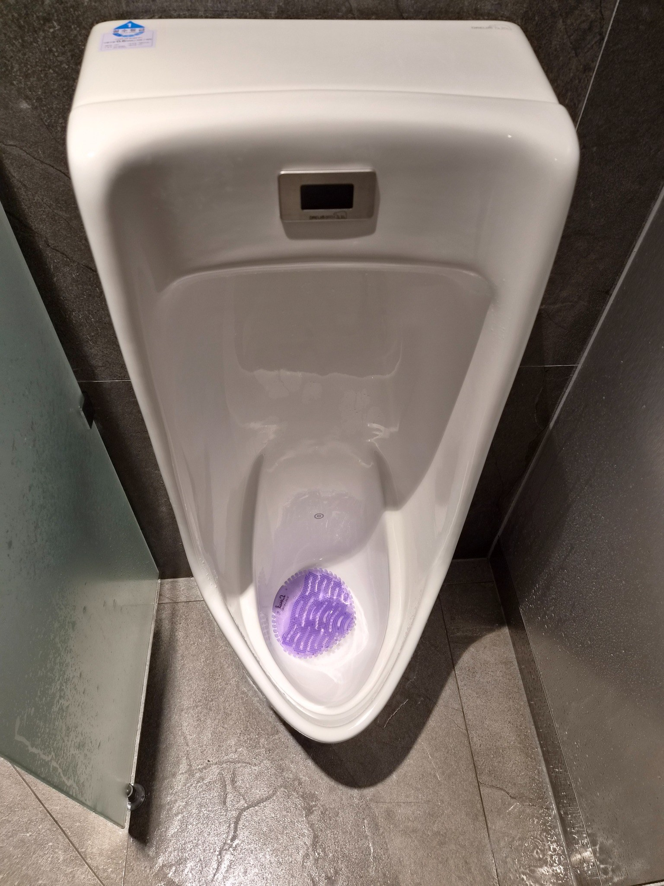

바닥과 출입구 경계부터 정리합니다
화장실 출입구는 외부 먼지와 내부 물기가 만나는 지점입니다. 바닥 전체를 세정하기 전에 모서리와 문턱 주변을 먼저 확인하면 오염을 끌고 다니는 것을 줄일 수 있습니다. 배수 방향과 바닥 재질에 맞춰 물기를 정리합니다.

거울과 세면대가 동시에 깨끗해야 합니다
세면대만 깨끗하고 거울에 얼룩이 남으면 전체가 지저분하게 느껴질 수 있습니다. 도기, 수전, 거울 순으로 관리하고 벽면 하단과 비누 디스펜서 주변까지 확인합니다. 마지막에는 물자국이 남지 않도록 마감합니다.

도기 표면의 밝기를 살려 마감했습니다
세정 후 세면대 표면에 잔여 얼룩이나 세제가 남지 않았는지 다시 확인했습니다. 수전 하단과 배수구 주변은 물때가 반복되기 쉬워 정기관리 때마다 체크하는 지점입니다. 손을 씻는 공간이 깔끔하면 화장실 전체 인상이 달라집니다.

양변기 주변을 함께 정리했습니다
양변기 안쪽 세정 후에는 시트와 뚜껑, 외부 도기, 바닥 접점을 확인합니다. 휴지통과 벽면 가까운 부분도 먼지가 모이기 쉬워 함께 정리했습니다. 정기청소는 이런 작은 구역을 반복적으로 놓치지 않는 것이 중요합니다.

소변기는 냄새 원인이 남지 않도록 관리합니다
소변기 내부와 배수부, 바닥 접점을 확인해 사용 후 남는 오염을 정리합니다. 물만 흘려보내는 방식으로는 냄새가 남을 수 있어 정기적인 세정이 필요합니다. 주변 바닥의 물기도 함께 마감했습니다.
김해 활천동 사업장 화장실은 이용량에 맞춰 관리합니다
직원 수와 방문객 수, 운영시간, 남녀 화장실 수, 소변기와 양변기 개수에 따라 필요한 작업시간과 관리주기가 달라집니다. 퍼펙트케어는 현장 확인 후 필요한 범위를 안내합니다.
화장실과 사무실·계단을 함께 정기관리할 수 있습니다
사업장 전체를 한 업체가 관리하면 청소 기준을 맞추기 쉽고 현장 동선도 단순해집니다. 바닥과 계단, 화장실, 공용공간을 필요한 범위만 묶어 상담할 수 있습니다.
현장에 맞춘 무료 방문견적
정기청소와 상가·사무실·화장실 청소는 공간 크기만으로 동일한 견적을 내기 어렵습니다. 퍼펙트케어는 현장의 이용량, 바닥 재질, 오염도, 관리 범위를 확인한 뒤 필요한 작업을 안내합니다.